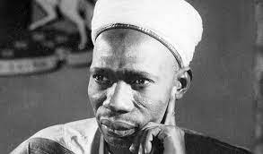
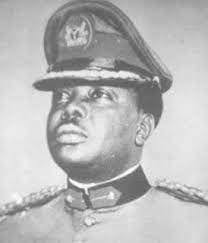

Nigeria History
The area began to come under British control in 1861 and was made a British colony in 1914. Nigeria gained independence in 1960 and became a republic in 1963. Ethnic strife soon led to military coups, and military groups ruled the country from 1966 to 1979 and from 1983 to 1999.
What was Nigeria before it was called Nigeria?
Before Flora Shaw suggested the name Nigeria, other competing names included "Royal Niger Company Territories", "Central Sudan", "Niger Empire", "Niger Sudan", and "Hausa Territories"
How did Nigeria began?
On January 1, 1914, Lord Frederick Lugard, the governor of both the Northern Nigeria Protectorate and the Colony and Protectorate of Southern Nigeria, signed a document consolidating the two, thereby creating the Colony and Protectorate of Nigeria. Forty-six years later in 1960, Nigeria became an independent state.2 Jan 2018
What are 2 history facts about Nigeria?
Modern Nigeria dates from 1914, when the British Protectorates of Northern and Southern Nigeria were joined. The country became independent on October 1, 1960, and in 1963 adopted a republican constitution but elected to stay a member of the Commonwealth.
Modern Nigeria dates from 1914, when the British Protectorates of Northern and Southern Nigeria were joined. The country became independent on October 1, 1960, and in 1963 adopted a republican constitution but elected to stay a member of the Commonwealth./h3>
When was Nigeria founded?
1 October 1960
Nigeria / Founded
Image of When was Nigeria founded?
What is the oldest tribe in Nigeria?
There has been much argument about which tribe in Nigeria is the oldest. The Ijaws started inhabiting the Niger Delta region of what is now Nigeria as far back as 800 BCE, thus making them one of the world's most ancient peoples. They have existed as a distinct language and ethnic group for over 5000 years
Who gave Nigeria it's first name?
Dame Flora Louise Shaw, Lady Lugard DBE (born 19 December 1852 – 25 January 1929), was a British journalist and writer. She is credited with having coined the name Nigeria.
Who first settled in Nigeria
Archaeological research, pioneered by Charles Thurstan Shaw, has shown that people were already living in south-eastern Nigeria (specifically Igbo Ukwu, Nsukka, Afikpo and Ugwuele) 100,000 years ago. Excavations in Ugwuele, Afikpo and Nsukka show evidence of long habitations as early as 6,000 BC
Who sold Nigeria to the British?
George Goldie the founder of the Royal Niger Company which had its headquarters in Lokoja. Sir. Goldie sold the Southern Nigeria protectorate (land and people) to the British Government for £865,000 (eight hundred and sixty five thousand pounds) in the year 1899.29 Jul 2020
list of nigeria leaders
- 1. Abubakar Tafawa Balewa 1960-1963

- 2. Nnamdi Azikwe 1963-1966
666
 3. Johnson Aguiyi Ironsi 1966
3. Johnson Aguiyi Ironsi 1966

- 4. Yakubu Gowon 1966-1975

- 5. Murtala Rufai Mohammed 1975-1976
6. Olusegun Aremu Obasanjo 1976-1979

- 7. Alhaji Shehu Shagari 1979-1983

- 8. Muhammadu Buhari 1983-1985
 9. Ibrahim Babangida 1985-1993
9. Ibrahim Babangida 1985-1993
- 10. Ernest Adegunle Shonekan 1993
- 11. Sani Abacha 1993-1998
- 12. Abdulsalami Abubakar 1998-1999
- 13. Olusegun Aremu Obasanjo 1999-2007
- 14. Umaru Musa Yar’Adua 2007-2010
- 15. Goodluck Ebele Jonathan 2010-2015
- 16. Muhammadu Buhari 2015 till date
- 17. Bola Ahmed Tinubu From Many 29th 2023

videos of events that happend in nigeria
videos of event in nigeria
- nigeria independence day
- nigeria we hail
- did nigeria really gain independence
- nigeria independence ceremony
- how nigeria looked before independence